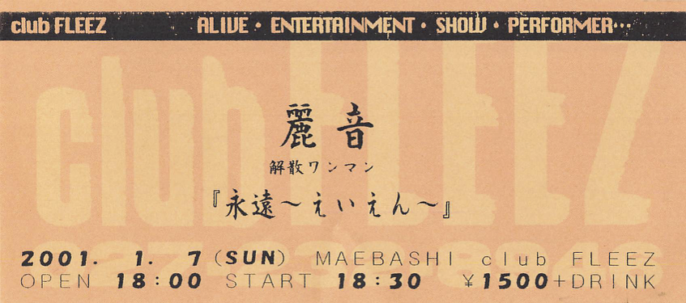
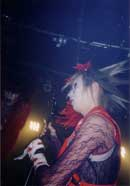
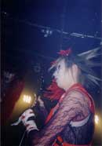

 



画像をクリックすると大きな画像が見られます。
−−第壱幕−−
―SE―
1. less
2. Ga.ラ.ku.タ.ba.コ
3. su.i.cide
4. 光の影
5. 進化の瞬間
―SE―
6. レプリカ
−−第弐幕−−
―SE―
Drums solo. Bass&Drums JAM.
1. 隷-しもべ-
―SE―
2. 「行」
3. 浮生麗終
−−第参幕−−
―SE―
1. 絹の絲と蜘の意図 (GJAMver.)
―MC―
2. eternalseason
3. 華
―MC―
4. 絹の絲と蜘の意図
−−アンコール−−
―SE―
―MC―
1. RAIN〜麗しい音〜
2. 妖艶
...本編終幕...
抽選会-フルメンバーMC-
LASTSONG―「less」
...終幕..永遠...
曲目は、美章さんにメールで教えて貰いました。ありがとうございます。
今日で麗音は見納め……。って事でいつもよりも多めに写真撮っておきました！
この日は衣装替えが5回ほどありました。
黒いやつ → 絹、蜘の赤いの → 特攻服 → 白いやつ → スーツ。
この日はラストライブと云う事で緊張してたのか、MCの時に文有希がうろちょろ回らなかったり、いつもよりぎこちない感じ。また、ライブの最後には抽選会と云う事で、ステージ衣装とかをプレゼントしてました。
「絹蜘」のアレンジバージョンとかもありました。あと、「RAIN〜麗しい音〜」という新曲もあったり、ドラムソロあったりで、珍しいものが色々と聴けてお得感がありました。
最後の最後に演奏したのは「less」。個人的には「less」が一番好きな曲なので、ラストライブの最後の最後でまた演奏してくれて、この曲で締めてくれてすごく嬉しかった！